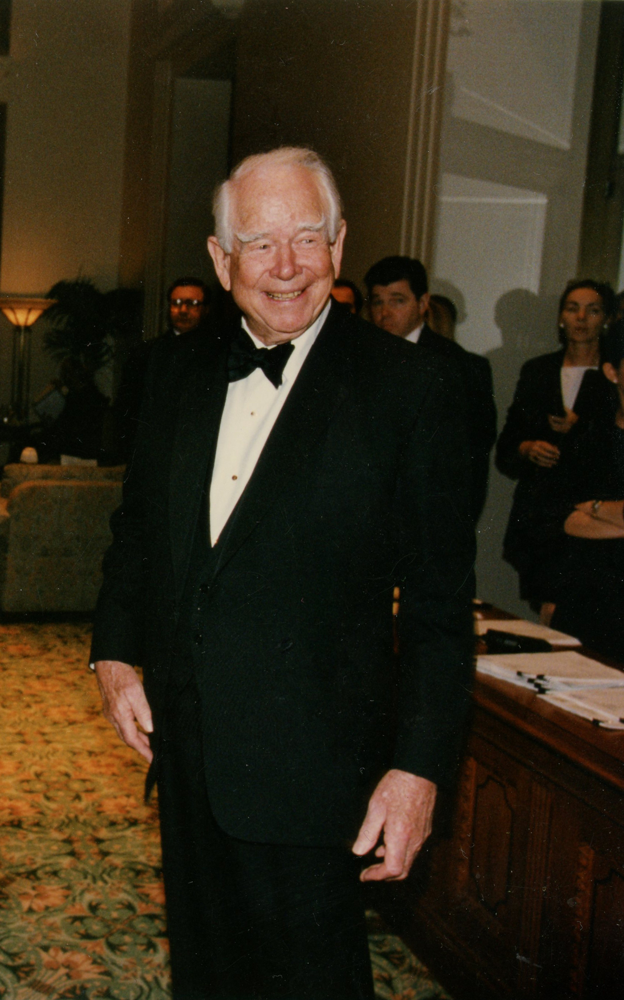

百事可樂的蘇聯海軍
AIVideo 故事板與成片預覽系統 · 自動生成於 20260926_百事可樂的蘇聯海軍
🎞️ 各場景分鏡與語音審查
001_scene_1 · 第 1 幕
時長: 14.43s

002_scene_2 · 第 2 幕
時長: 8.52s

003_scene_3 · 第 3 幕
🖼️ 畫中畫 PiP
時長: 9.32s

疊加參考圖 (PiP)：

004_scene_4 · 第 4 幕
🖼️ 畫中畫 PiP
時長: 11.07s

疊加參考圖 (PiP)：

005_scene_5 · 第 5 幕
時長: 8.68s

006_scene_6 · 第 6 幕
時長: 4.14s